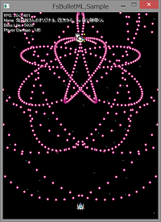
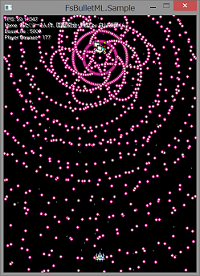
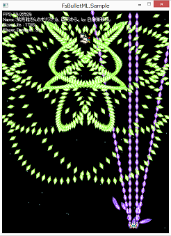

FsBulletML(Beta)
これは何？
FsBulletMLは、弾幕記述言語BulletMLのF#実装です。
判別共用体(Discriminated Unions)で弾幕を記述できる内部DSLを提供します。
また、XML形式、SXML形式、FSB形式(オフサイドルールの独自形式)の外部DSLを読み込んで実行することもできます。

特徴
- 判別共用体で弾幕を記述できます。(内部DSL)
1: 2: 3: 4: 5: 6: 7: 8: 9: 10: 11: 12: 13: 14: 15: 16: 17: 18: |
open FsBulletML /// 全方位弾 let sample = Bulletml({ bulletmlXmlns = None; bulletmlType = Some ShootingDirection.BulletVertical;}, [BulletmlElm.Action ({actionLabel = Some "circle";}, [Action.Repeat (Times "$1", Action ({actionLabel = None;}, [Fire ({fireLabel = None;}, Some (Direction (Some {directionType = DirectionType.Sequence;},"360/$1")), None, Bullet ({bulletLabel = None;}, None, None,[]))]))]); BulletmlElm.Action ({actionLabel = Some "top";}, [Action.Repeat (Times "30", ActionElm.Action ({actionLabel = None;}, [Action.ActionRef ({actionRefLabel = "circle";}, ["20"]); Wait "20"]))])]) |
XML形式で弾幕を記述できます。 (外部DSL)
1: 2: 3: 4: 5: 6: 7: 8: 9: 10: 11: 12: 13: 14: 15: 16: 17: 18: 19: 20: 21: 22: 23: 24: 25: |
<!--全方位弾--> <bulletml> <action label="circle"> <repeat> <times>$1</times> <action> <fire> <direction type="sequence">360/$1</direction> <bullet/> </fire> </action> </repeat> </action> <action label="top"> <repeat> <times>30</times> <action> <actionRef label="circle"> <param>20</param> </actionRef> <wait>20</wait> </action> </repeat> </action> </bulletml> |
SXML形式で弾幕を記述できます。(外部DSL)
1: 2: 3: 4: 5: 6: 7: 8: 9: 10: 11: 12: 13: 14: 15: |
(bulletml (action (@ (label "circle")) (repeat (times "$1") (action (fire (direction (@ (type "sequence")) "360/$1") (bullet))))) (action (@ (label "top")) (repeat (times "30") (action (actionRef (@ (label "circle")) (param "20")) (wait "20"))))) |
FSB形式(オフサイドルールの独自形式)で弾幕を記述できます。(外部DSL)
1: 2: 3: 4: 5: 6: 7: 8: 9: 10: 11: 12: 13: 14: 15: |
bulletml action label="circle" repeat times:"$1" action fire direction type="sequence":"360/$1" bullet action label="top" repeat times:"30" action actionRef label="circle" param:"20" wait:"20" |
- 敵弾、敵機の動作に加えて、自機弾も
BulletMLで記述することができます(互換性を保った仕様拡張)。
- Bulletml判別共用体の記述を容易にするためのコードスニペットを提供しています。
※拡張機能 F# snippetを導入する必要があります
F# snippet extension - Visual Studio Gallery - Microsoft
F# code snippet + snippet management for Visual Studio 2012 Addon - Apollo 13 - Tao Liu's blog
すべての F# ユーザーが今すぐ導入すべき拡張機能 F# snippet を導入しよう - Bug Catharsis
- 外部DSLは
C#やVBからも使えます。F#で定義した内部DSLをC#やVBから呼び出すこともできます。
インストール
内部DSLを利用するには、FsBulletML.Coreをインストールします。
FsBulletML.CoreはNuGetからインストールすることができます。
PM> Install-Package FsBulletML.Core
外部DSLを利用するには、FsBulletML.Coreに加えて、FsBulletML.Parserをインストールします。
FsBulletML.ParserはNuGetからインストールすることができます。
PM> Install-Package FsBulletML.Parser
Demo
ご利用上の注意
- パフォーマンスがよろしいとは言えないので鬼畜系弾幕は厳しいかもしれません。
ActionRef,FireRef,BulletRef要素の相互参照に対応していません。- APIが固まっていないBeta版扱い。なので、バージョンアップによって破壊的変更がされる可能性があります。
今後の課題とか（予定は未定）
- テストが雑。現状ざっくりとしたパーサのテストしかない。
BulletMLの構文チェックが中途半端。- より型安全な弾幕記述のサポート。
- モナディックに弾幕を構築する仕組みとか。
CustomOperationAttributeを利用したコンピュテーション式とか。 SXML形式のパーサの改善。行コメントのサポート。FSB形式のパーサの改善。行コメントのサポート。- APIの改善とか。
C#等からの使いやすさの向上とか。 - パフォーマンスの向上とか。
BulletMLの仕様と互換を持たせつつ、独自仕様を追加。BulletML型プロバイダーとか。(F#の型を作れるようにならないとツライ)別枠でカスタム ビジュアライザーの提供とか。
名前空間 FsBulletML
val sample : 'a
完全名: Index.sample
全方位弾
完全名: Index.sample
全方位弾
Multiple items
共用体ケース Bulletml.Bulletml: BulletmlAttrs * BulletmlElm list -> Bulletml
--------------------
type Bulletml =
| Bulletml of BulletmlAttrs * BulletmlElm list
| Action of ActionAttrs * Action list
| ActionRef of ActionRefAttrs * Params
| Fire of FireAttrs * Direction option * Speed option * BulletElm
| FireRef of FireRefAttrs * Params
| Wait of string
| Vanish
| ChangeSpeed of Speed * Term
| ChangeDirection of Direction * Term
| Accel of Horizontal option * Vertical option * Term
...
完全名: FsBulletML.DTD.Bulletml
共用体ケース Bulletml.Bulletml: BulletmlAttrs * BulletmlElm list -> Bulletml
--------------------
type Bulletml =
| Bulletml of BulletmlAttrs * BulletmlElm list
| Action of ActionAttrs * Action list
| ActionRef of ActionRefAttrs * Params
| Fire of FireAttrs * Direction option * Speed option * BulletElm
| FireRef of FireRefAttrs * Params
| Wait of string
| Vanish
| ChangeSpeed of Speed * Term
| ChangeDirection of Direction * Term
| Accel of Horizontal option * Vertical option * Term
...
完全名: FsBulletML.DTD.Bulletml
共用体ケース Option.None: Option<'T>
共用体ケース Option.Some: 'T -> Option<'T>
type ShootingDirection =
| BulletNone
| BulletVertical
| BulletHorizontal
完全名: FsBulletML.DTD.ShootingDirection
| BulletNone
| BulletVertical
| BulletHorizontal
完全名: FsBulletML.DTD.ShootingDirection
共用体ケース ShootingDirection.BulletVertical: ShootingDirection
type BulletmlElm =
| Bullet of BulletAttrs * Direction option * Speed option * ActionElm list
| Fire of FireAttrs * Direction option * Speed option * BulletElm
| Action of ActionAttrs * Action list
完全名: FsBulletML.DTD.BulletmlElm
| Bullet of BulletAttrs * Direction option * Speed option * ActionElm list
| Fire of FireAttrs * Direction option * Speed option * BulletElm
| Action of ActionAttrs * Action list
完全名: FsBulletML.DTD.BulletmlElm
共用体ケース BulletmlElm.Action: ActionAttrs * Action list -> BulletmlElm
Multiple items
共用体ケース ActionElm.Action: ActionAttrs * Action list -> ActionElm
--------------------
type Action =
| ChangeDirection of Direction * Term
| Accel of Horizontal option * Vertical option * Term
| Vanish
| ChangeSpeed of Speed * Term
| Repeat of Times * ActionElm
| Wait of string
| Fire of FireAttrs * Direction option * Speed option * BulletElm
| FireRef of FireRefAttrs * Params
| Action of ActionAttrs * Action list
| ActionRef of ActionRefAttrs * Params
完全名: FsBulletML.DTD.Action
共用体ケース ActionElm.Action: ActionAttrs * Action list -> ActionElm
--------------------
type Action =
| ChangeDirection of Direction * Term
| Accel of Horizontal option * Vertical option * Term
| Vanish
| ChangeSpeed of Speed * Term
| Repeat of Times * ActionElm
| Wait of string
| Fire of FireAttrs * Direction option * Speed option * BulletElm
| FireRef of FireRefAttrs * Params
| Action of ActionAttrs * Action list
| ActionRef of ActionRefAttrs * Params
完全名: FsBulletML.DTD.Action
共用体ケース Action.Repeat: Times * ActionElm -> Action
Multiple items
共用体ケース Times.Times: string -> Times
--------------------
type Times = | Times of string
完全名: FsBulletML.DTD.Times
共用体ケース Times.Times: string -> Times
--------------------
type Times = | Times of string
完全名: FsBulletML.DTD.Times
共用体ケース Action.Fire: FireAttrs * Direction option * Speed option * BulletElm -> Action
Multiple items
共用体ケース Direction.Direction: DirectionAttrs option * string -> Direction
--------------------
type Direction = | Direction of DirectionAttrs option * string
完全名: FsBulletML.DTD.Direction
共用体ケース Direction.Direction: DirectionAttrs option * string -> Direction
--------------------
type Direction = | Direction of DirectionAttrs option * string
完全名: FsBulletML.DTD.Direction
type DirectionType =
| Aim
| Absolute
| Relative
| Sequence
完全名: FsBulletML.DTD.DirectionType
| Aim
| Absolute
| Relative
| Sequence
完全名: FsBulletML.DTD.DirectionType
共用体ケース DirectionType.Sequence: DirectionType
共用体ケース BulletElm.Bullet: BulletAttrs * Direction option * Speed option * ActionElm list -> BulletElm
type ActionElm =
| Action of ActionAttrs * Action list
| ActionRef of ActionRefAttrs * Params
完全名: FsBulletML.DTD.ActionElm
| Action of ActionAttrs * Action list
| ActionRef of ActionRefAttrs * Params
完全名: FsBulletML.DTD.ActionElm
共用体ケース ActionElm.Action: ActionAttrs * Action list -> ActionElm
共用体ケース Action.ActionRef: ActionRefAttrs * Params -> Action
共用体ケース Action.Wait: string -> Action